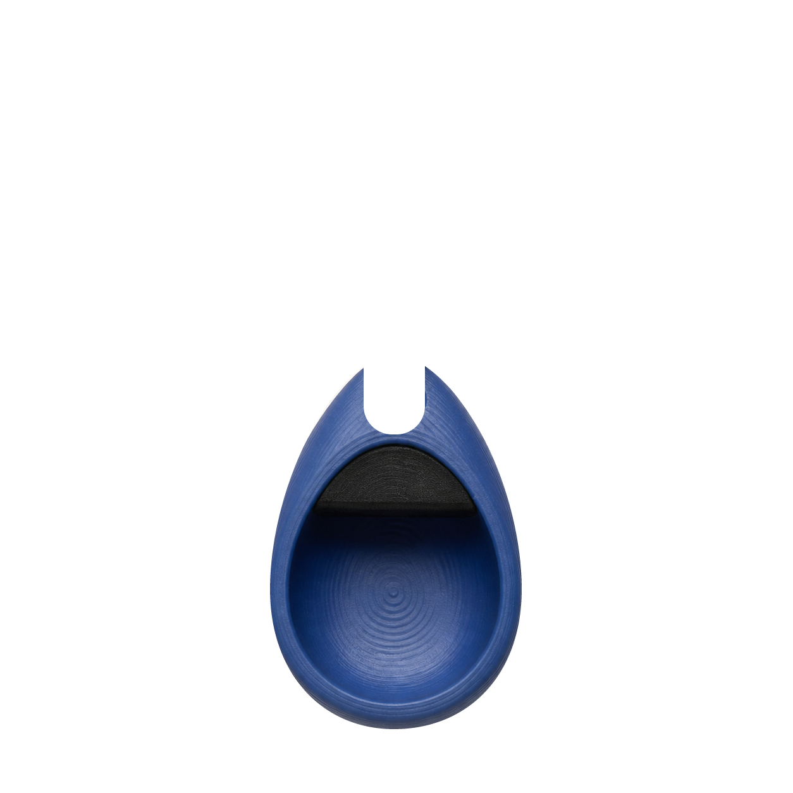
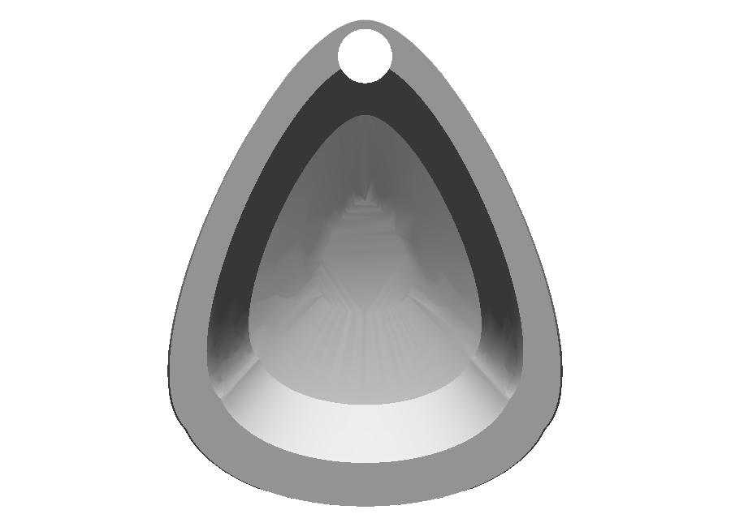
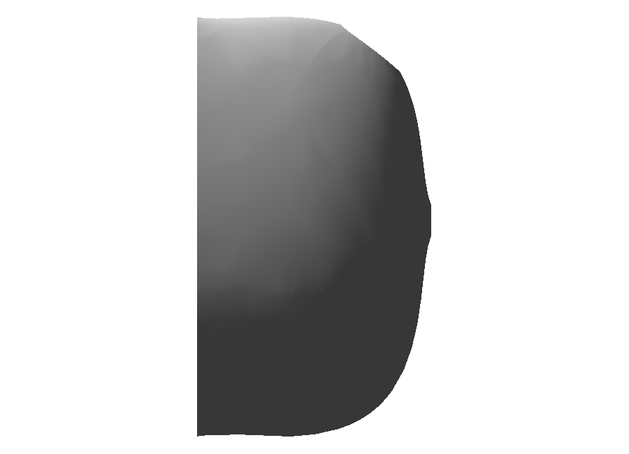
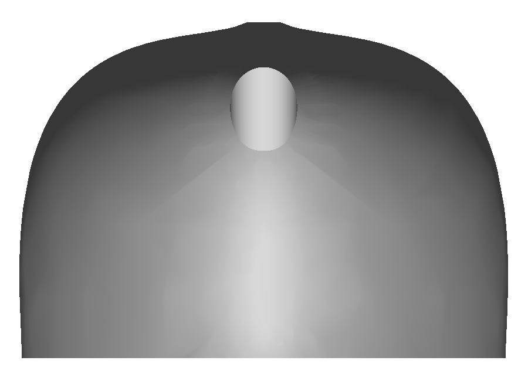
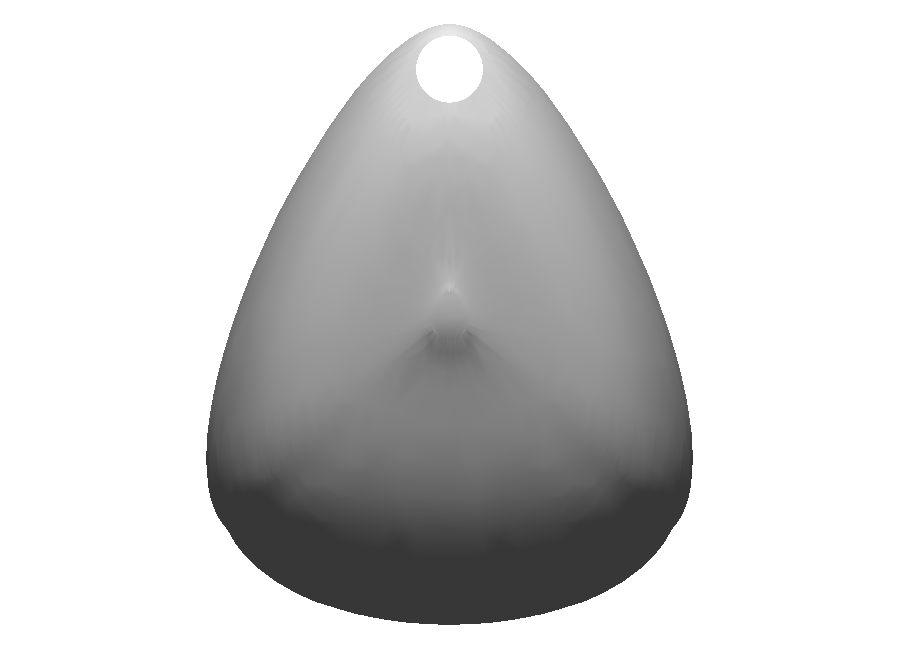
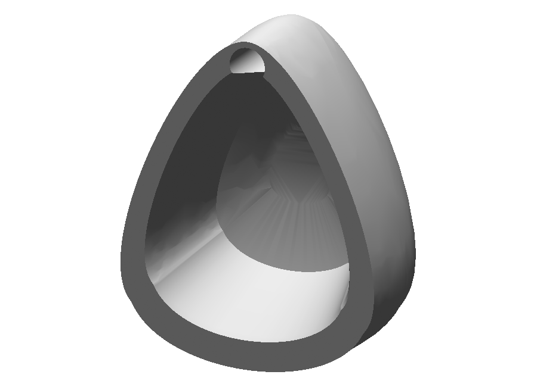
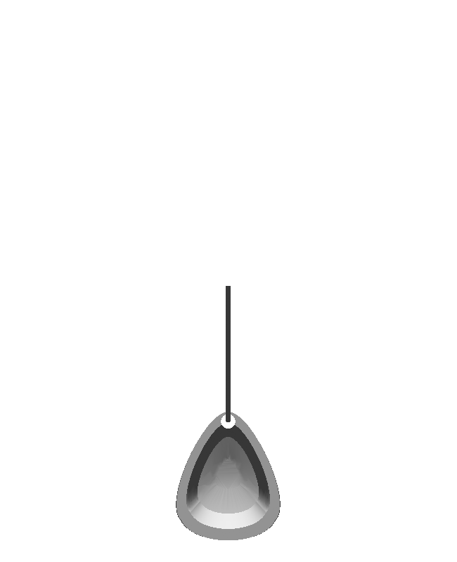
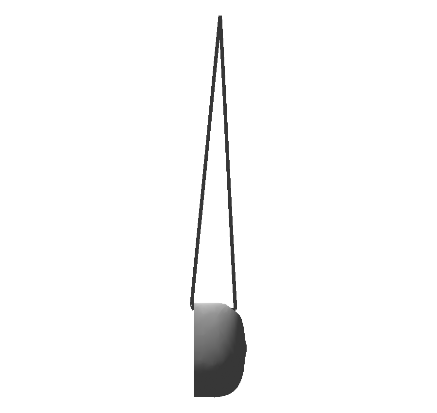
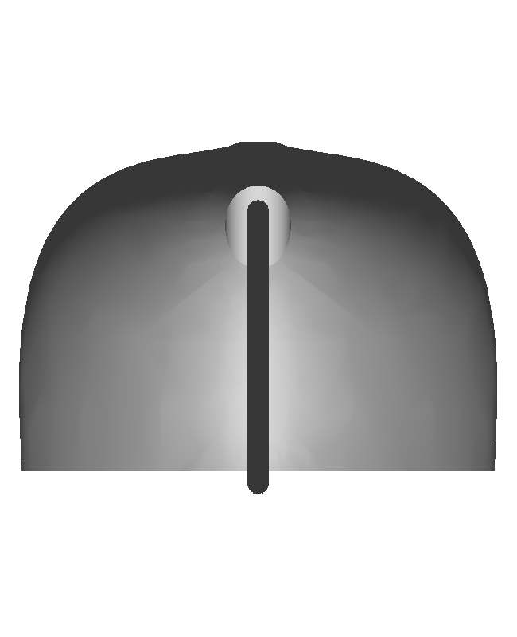

Prior committed raster with current native CAD front, side, top, rear and oblique views. No prior CAD side/top existed. Compiled analytic normals, depth-buffered rendering, uniform material-free body. Cord comparison follows source-governed native route solving. Human CAD review pending.






Current shorter descriptor-bound generated routes, revised at the user’s request on September 30; cord radius and total length are display estimates. Native solid clearance results are retained in the adjacent cord-check reports.


